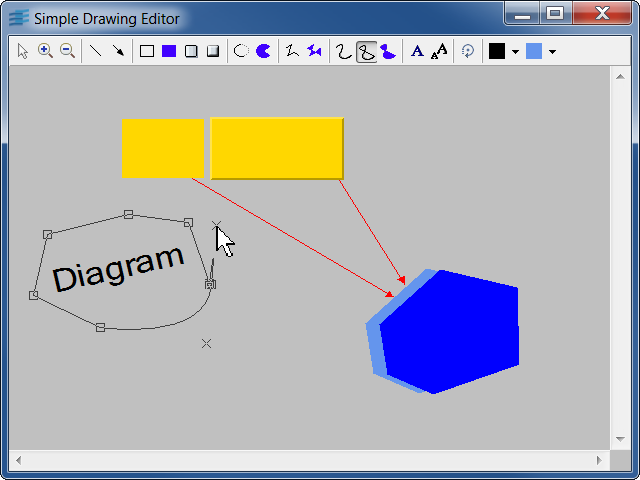

drawExample of a basic graphic editor.
This simple application allows you to create graphic objects and modify them. The application is composed of a drawing area and a toolbar that enables to switch between several editing modes. In the drawing area, the default manager accelerators are available:
IlvSelectInteractor in selection mode:
For demonstration purposes, this sample
code uses portable GUI elements from the Gadgets
package of the Rogue Wave Views suite. Feel free to use
these elements in your application if you have a
license for Rogue Wave Views or for Rogue Wave Views Controls.
This information applies to the classes located in the
library ilvgadgt,
listed in the README
file that you can find in the installation directory.
IlvManagerIlvManagerViewHookIlvSelectInteractorIlvResourcePanel